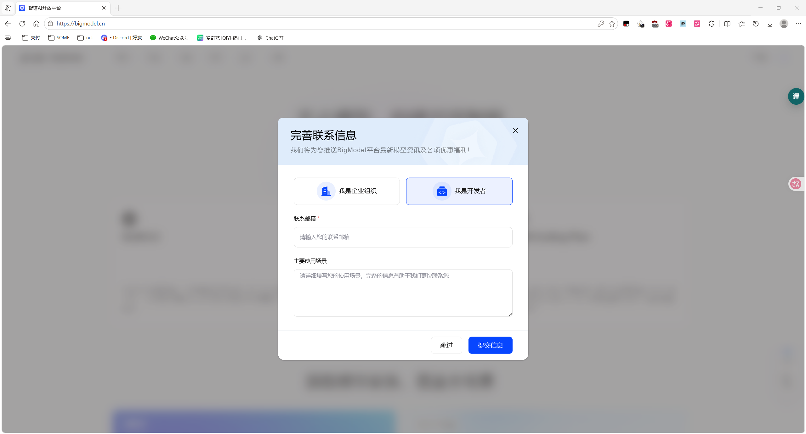
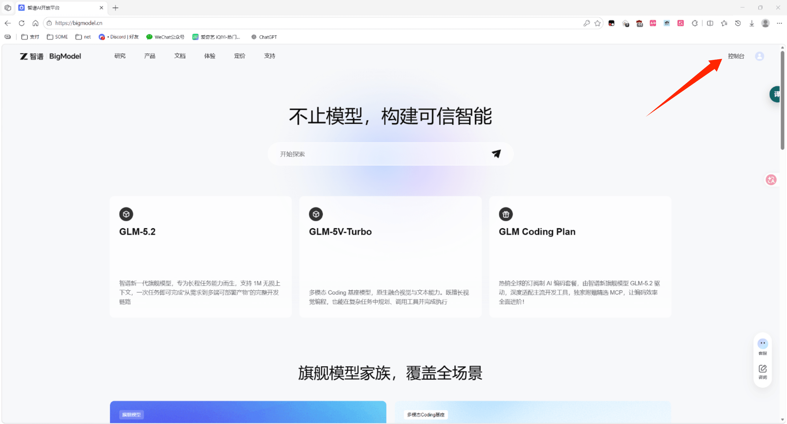
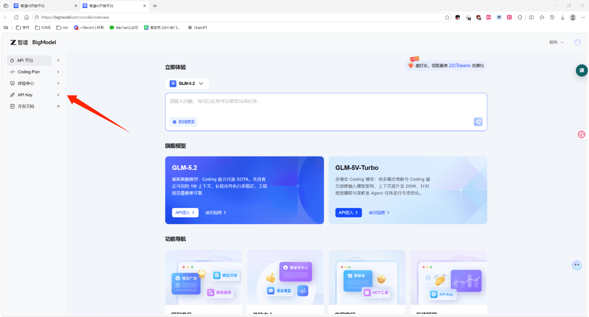
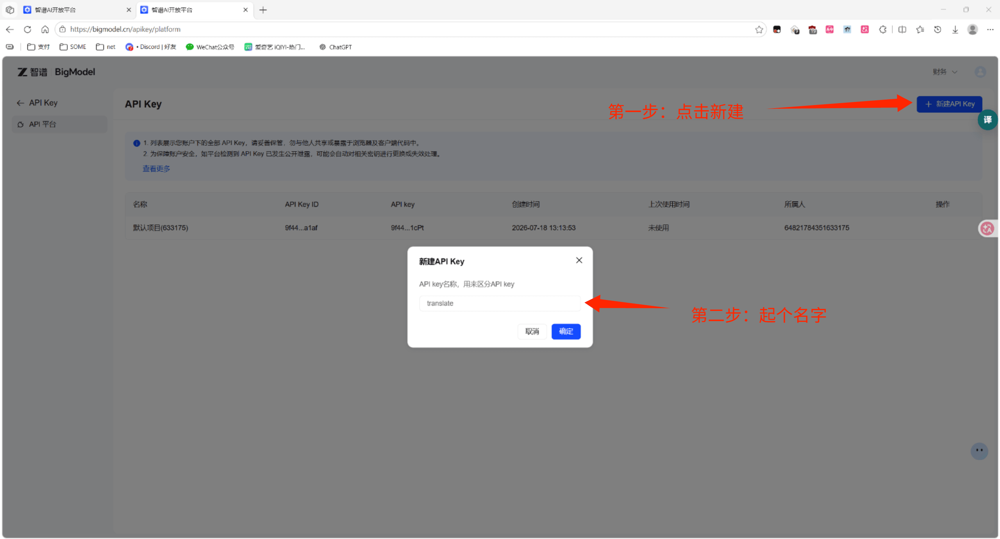
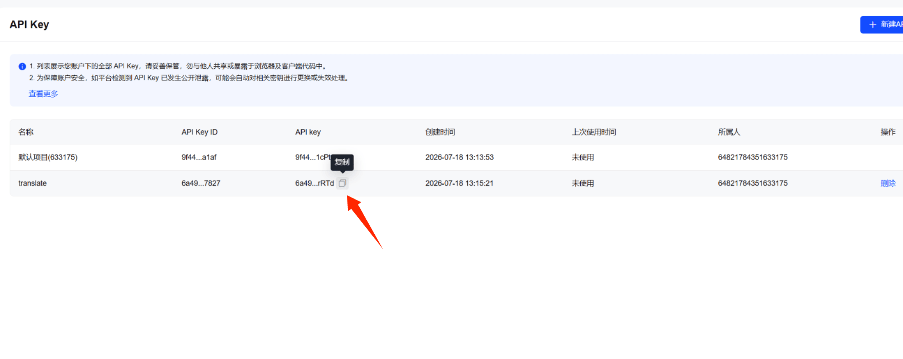
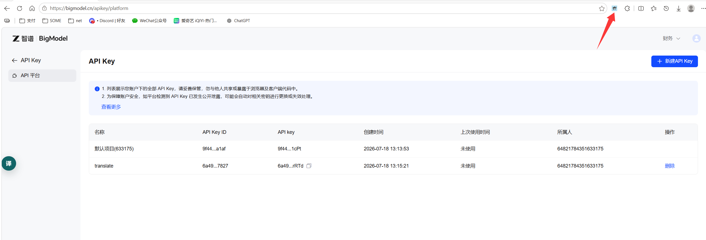
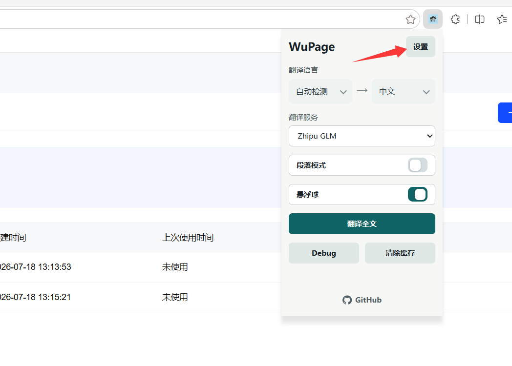
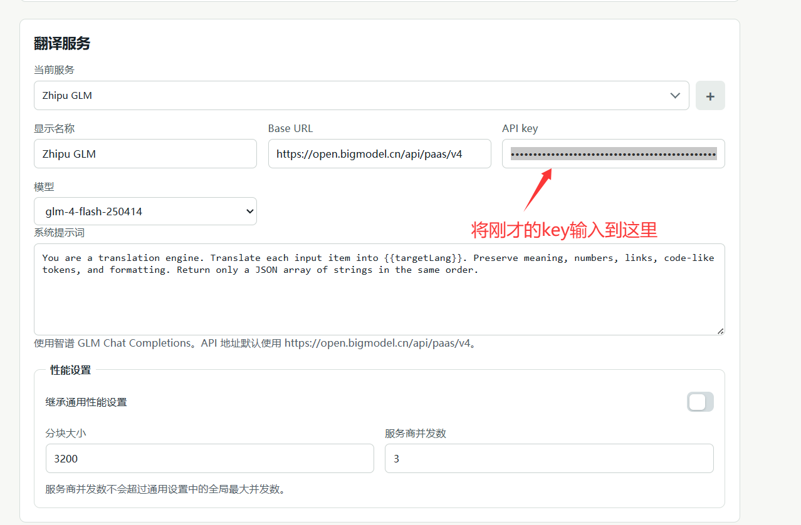

免 Key
Google Web Translate
无需 API Key，开箱即用，适合快速体验。
端点
https://translate.googleapis.com/translate_a/single
-
1
直接选择服务
在 WuPage 弹窗的「翻译服务」下拉中选择「Google Web Translate」即可。
-
2
无需任何配置
无需填写 Key、Endpoint，立即点击「翻译全文」开始使用。
推荐
智谱 GLM
国内可直连的 OpenAI 兼容大模型，翻译质量优秀。
Base URL
https://open.bigmodel.cn/api/paas/v4
-
1
访问 bigmodel.cn
打开 bigmodel.cn。首次访问可能弹出“完善联系信息”对话框，可填写邮箱和场景或点击「跳过」。

bigmodel.cn 首页与完善信息对话框
-
2
进入控制台
在首页右上角点击「控制台」按钮，进入开发者控制台。

从首页右上角进入「控制台」
-
3
打开 API Key 页
在控制台左侧导航中点击「API Key」进入密钥管理页面。

在左侧导航点击「API Key」
-
4
新建 API Key
点击页面右上角「+ 新建API Key」按钮，在弹窗中输入名称（例如 translate），点击「确定」。

新建 API Key 并命名
-
5
复制 API Key
在 API Key 列表中找到刚创建的密钥，将鼠标悬停在「API key」列上，点击出现的「复制」按钮。

悬停 API key 列出现「复制」按钮
-
6
打开 WuPage 扩展
点击浏览器工具栏中的 WuPage 扩展图标，打开弹窗。

点击工具栏 WuPage 图标打开弹窗
-
7
选择 GLM 服务
在 WuPage 弹窗中，将「翻译服务」切换为「Zhipu GLM」，然后点击弹窗内的「设置」按钮进入选项页。

翻译服务切到「Zhipu GLM」后点「设置」
-
8
填入凭据并保存
在选项页的「翻译服务」区域确认或填写以下配置，然后点击「保存」：
- Base URL：
https://open.bigmodel.cn/api/paas/v4
- API key：粘贴刚才复制的密钥
- 模型：
glm-4-flash-250414（或其他 GLM 模型）

选项页填入 Base URL / API key / 模型后保存
测试与使用：点击「测试服务」按钮验证连通性。通过后，在任意网页点击「翻译全文」即可使用 GLM 翻译。
Azure
Microsoft Translator
微软 Azure 认知服务翻译，稳定、支持区域路由。
端点
POST https://api.cognitive.microsofttranslator.com/translate?api-version=3.0&to={targetLang}
-
1
-
2
获取 Key 与区域
在资源的「密钥和终结点」页获取 Key 和区域（如 eastasia）。
-
3
填入 WuPage
在 WuPage 选项页填入 API key 与 Region，保存后即可使用。
GCP
Google Cloud Translation
官方 Translation Basic API，按量计费、稳定可靠。
端点
POST https://translation.googleapis.com/language/translate/v2?key={apiKey}
-
1
-
2
创建 API Key
在「凭据」页面创建 API Key，建议限制其只调用 Translation API。
-
3
填入 WuPage
在 WuPage 选项页填入 API key，保存即可。
LLM
OpenAI 兼容
支持任意 OpenAI 兼容的 /chat/completions 服务，如 OpenAI、DeepSeek、智谱 GLM 等。
示例
POST {baseURL}/chat/completions
-
1
获取凭据
在服务商处获取 API Key 与 baseURL。
-
2
填入配置
在 WuPage 选项页填入 baseURL、API key、model、prompt。
自定义
HTTP 模板
适配任意免费 / 付费翻译 API，按模板拼装请求与解析响应。
支持占位符
{{targetLang}}{{sourceLang}}{{texts}}{{json texts}}
-
1
填写请求模板
在选项页填入 URL 模板、请求方法（GET/POST）、请求体模板。
-
2
填写响应路径
配置响应路径，使解析结果为顺序一致的译文数组。
-
3
测试并保存
点击「测试服务」验证后保存，即可在弹窗选择该服务使用。